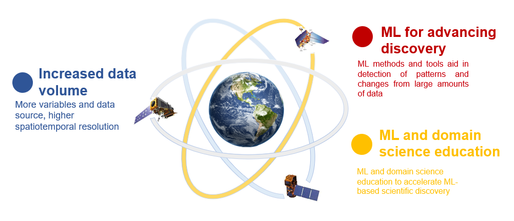

Machine learning offers tools that are particularly well suited to addressing research challenges in geosciences. Many fundamental earth system processes such as fluid and solid dynamics, affecting everything from crustal deformation to climate patterns, are non-linear and not well represented in existing deterministic models. It is also difficult to measure all components of the systems we are studying (e.g. the base of an ice sheet or a continental plate boundary), but we often can measure the second order impacts of these physical systems (e.g. ice sheet surface velocity or GPS uplift rates). ML provides novel approaches for discovering trends in these observations that may illuminate new understandings of driving physical processes. Traditional geoscience modeling uses a top-down approach based on our understanding of the physical processes and their representation in physics-based models, but it is limited by that particular representation. In contrast, ML can discover patterns and trends in large amounts of data, as it is based on a bottom-up approach in which algorithms learn relationships between input data and output. ML models are also highly efficient and, in some cases, more accurate because of their flexibility to accommodate non-linearity and/or non-Gaussianity. Recent approaches combine physics-based modeling from domain science with ML for building powerful prediction systems that are performant and easier to interpret.
As geoscience has entered an era in which both in-situ and remote sensing observations are dense and global, advances in observational techniques have dramatically increased the spatial and temporal resolution and therefore, data quality and volume. ML tools can assist handling large volumes of observations, modeling, analysis, and forecasting of the environment by increasing the speed and accuracy of computations. For the specific case of routine global monitoring of volcanic unrest, synthetic aperture radar can detect surface displacements in the months leading up to an eruption. However, the data volume and velocity from satellite sensors is too great for scientists to manually scrutinize each observation (NASA’s upcoming NISAR mission will generate 85TB/day, IRIS seismic data archive is reaching PB and is expecting a multifold increase), which is why automated ML methods for anomaly detection are essential for future assessments. ML has demonstrated value throughout many geoscience disciplines for data preprocessing, postprocessing, modeling and predicting.
Many of the remote sensing data, model outputs, time series of observations and other types of spatiotemporal datasets suitable for ML applications in geoscience are already stored on the cloud. The largest seismic and geodetic archives currently hosted by the Incorporated Research Institutions for Seismology (IRIS) and the UNAVCO are merging data centers and preparing their merge and migration to cloud storage in order to promote a data-close-to-compute platform. NASA EOSDIS (Earth Observing System Data and Information System) predicts that its data archive (37.2 Petabytes in 2020) will reach 247 Petabytes in 2025, and adopted a strategic vision to operate multiple components in a commercial cloud (Zurbuchen et. al. 2019).
With recent computational hardware innovations such as graphics processing units (GPUs), as well as innovations in ML methods themselves, ML is positioned to assist geoscientists by exploiting untapped environmental observations and enhancing Earth system modeling in timely and cost-effective ways. However, reproducible ML workflows require sophisticated coupling of advanced software, data processing pipelines, visualization tools, and rapidly evolving Cloud-based CI. Adopting ML curriculum in classrooms has great potential for advancing ML-based discovery in the geosciences through hands-on teaching and project work.
We will cultivate the development of discipline-specific ML libraries, workflows and communities of practice capable of sustaining future growth of ML cybertraining opportunities. To address the general lack of educational material in ML for geoscientific applications we will assemble a team of geoscience educators to create a novel ML curriculum. These materials could then be included in several university courses to further broaden our impact on emerging ML communities. Our GeoSMART implementation plan will guide participants through training in fundamental open source ML toolkits and data science skills.
Open Science
Open-source software, open data, open research
Computational Workflows
GPUs, cloud computing, workflow management, reproducibility
Machine Learning
Models and techniques best suited to address specific science questions
(explainable, interpretable, physics-informed
Data Science
Basic data science knowledge for geoscience applications
Collaboration and Discovery
Accelerate machine learning based discovery in the geosciences
Hands-On Training
Intensive week-long training and coding events based on the University of
Washington eScience Institute hackweek model
Uses Cases
Documented end-to-end machine learning workflows that can be adopted
and adapted for further use
Classroom Curriculum
Domain science, data science and machine learning classroom education
Hover the icons

With these fundamental skills, participants will then progress through interactive events including hackweeks, project-led and peer-to-peer mentoring activities and incubators. By building tools using open source and cloud-accessible platforms, and by partnering with colleges and institutions who currently lack computing resources for ML workflows, we will democratize access to our cybertraining materials and ensure more people can be included in helping to solve urgent geoscience challenges. There is a clear need for scientists that have both data science skills and domain knowledge, and the demand for these coupled skills is recognized by both academic and professional environments.